Запуск без нового логина через проверенный initData.
M
Telegram loyalty platform
Покупка.
Игра. Возврат.
Maverick превращает QR на упаковке в клуб лояльности внутри Telegram: с заданиями, наградами, играми, мерчом и полным операционным управлением.
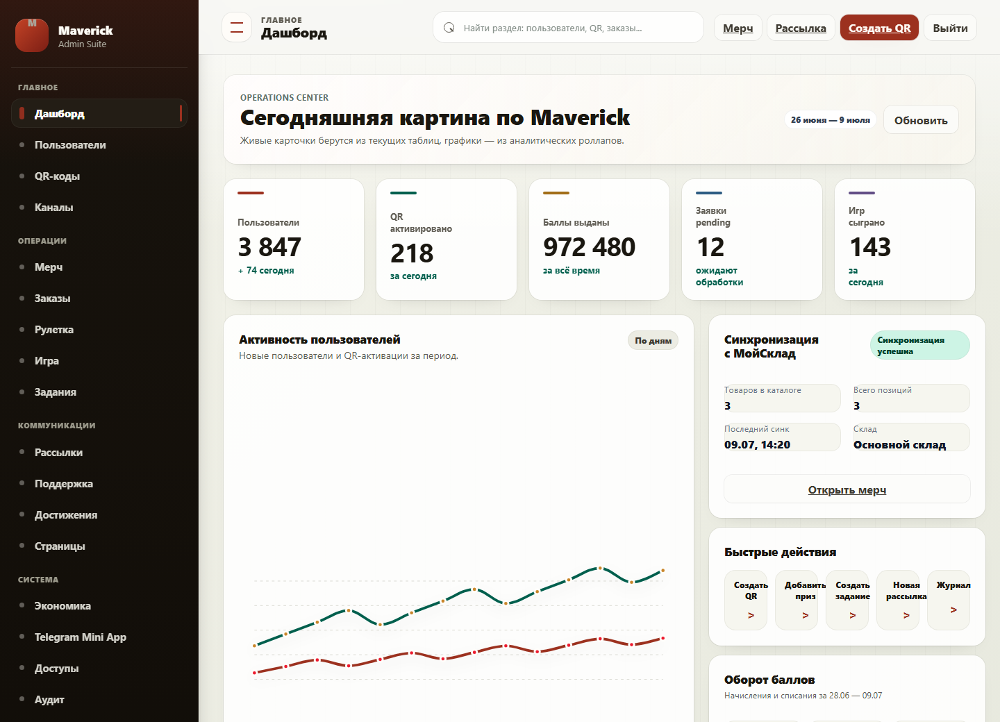
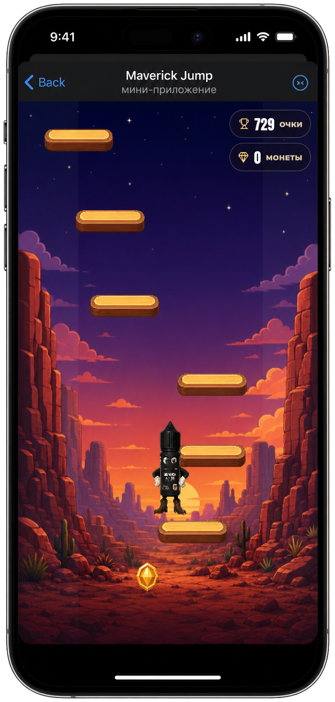
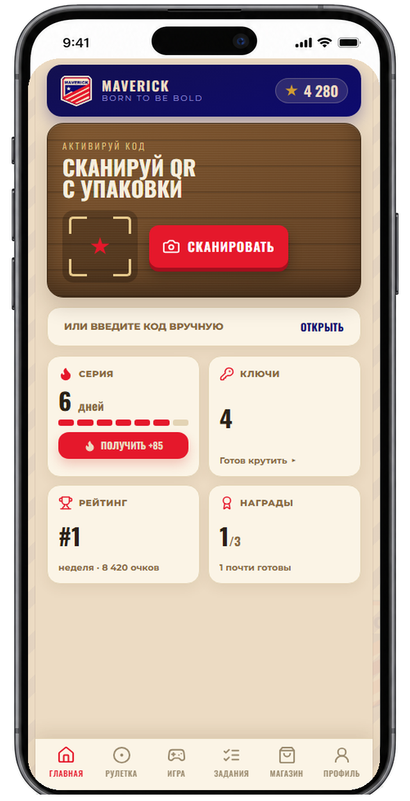
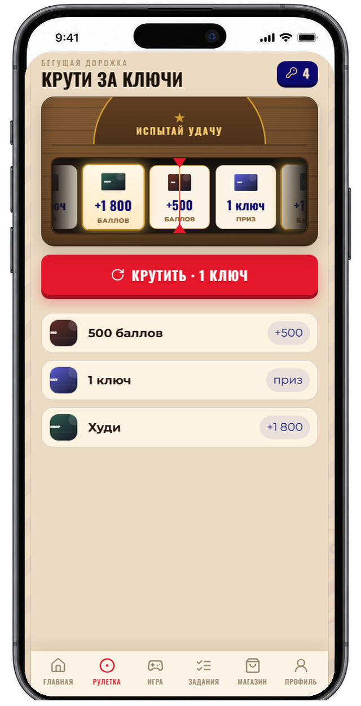
Telegram Mini App
Bot & notifications
Admin suite
Games & economy
Покупка не заканчивается на кассе.
Один QR запускает длинный сценарий: активация, награда, ежедневное действие, игра и следующая причина вернуться к бренду.
-
Сканирует
Одноразовый QR с упаковки открывает Mini App.
-
Активирует
Backend валидирует код и фиксирует награду.
-
Играет
Ключи превращаются в рулетку и Maverick Jump.
-
Растёт
Задания, серия визитов и рейтинг удерживают прогресс.
-
Забирает
Баллы обмениваются на реальный мерч.
Весь клуб.
В одном касании.
Никаких отдельных аккаунтов и тяжёлых кабинетов. Telegram initData связывает человека, баланс, задания, игру, заказы и историю наград в одном профиле.
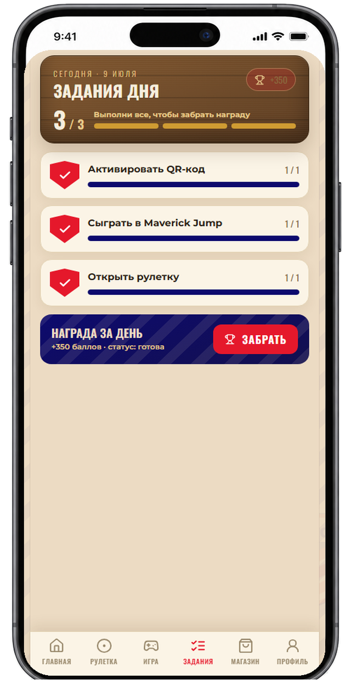
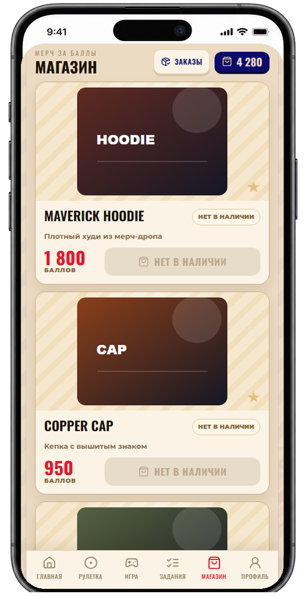
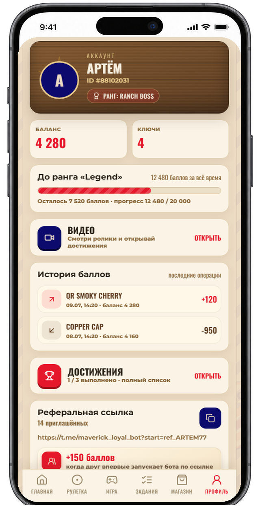
Баллы и ключи ведутся раздельными журналами операций.
Резерв баллов и остатков защищает оформление заказа.
Возвращает не скидка.
Возвращает ожидание.
Две механики работают на одном балансе, но каждая создаёт свой ритм возвращения.
Maverick Jump
Аркада без накрутки
Сервер выдаёт одноразовую игровую сессию, принимает результат и отправляет невозможные забеги на ручную проверку.
- Недельный и месячный лидерборд
- Single-use session token
- Sanity checks результата
Roulette
Приз выбирает сервер
Настраиваемые веса наград, отдельный журнал ключей и идемпотентная выдача не позволяют повторно получить один и тот же приз.
- Гибкие веса наград
- Аудит каждой попытки
- Защита от повторной выдачи
Операционный центр.
Операционная команда видит экономику, QR, пользователей, игру, заказы и коммуникации в одном интерфейсе с ролями, аудитом и отдельными разрешениями на PII.
QR batchesReward economyMoySkladGame reviewRBACAudit log
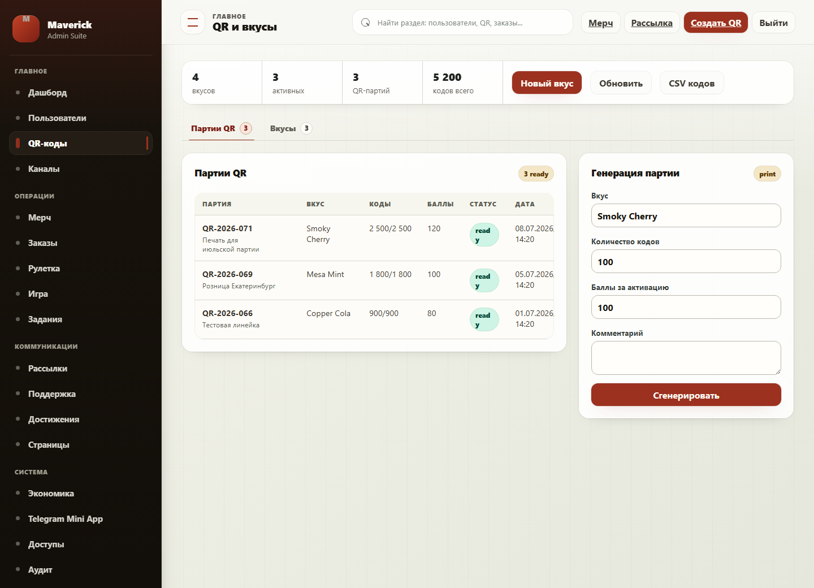
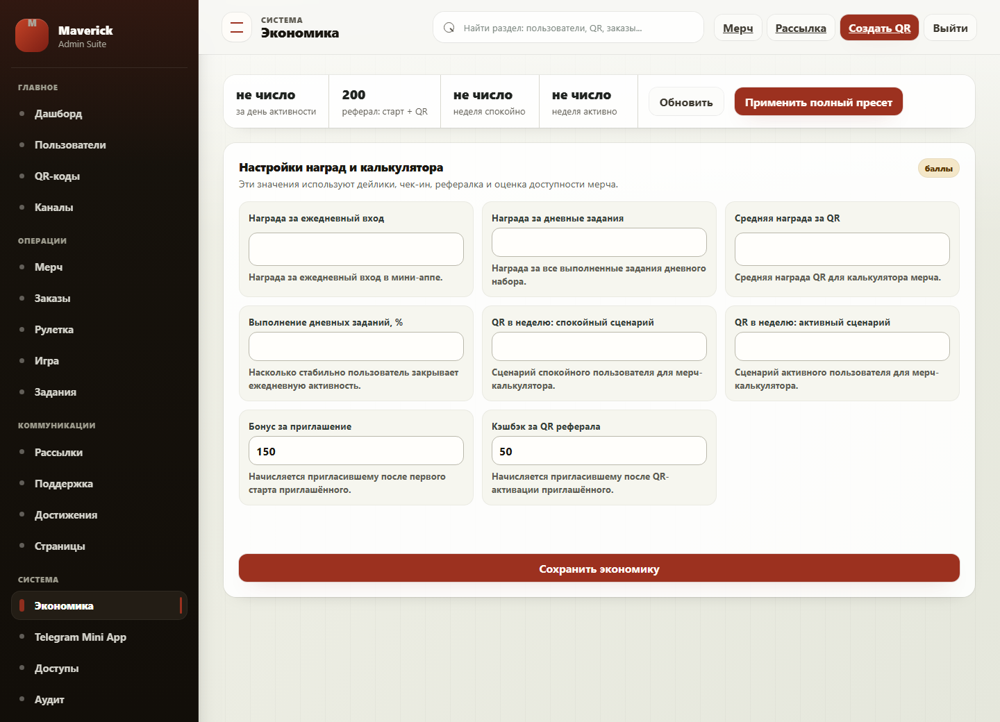
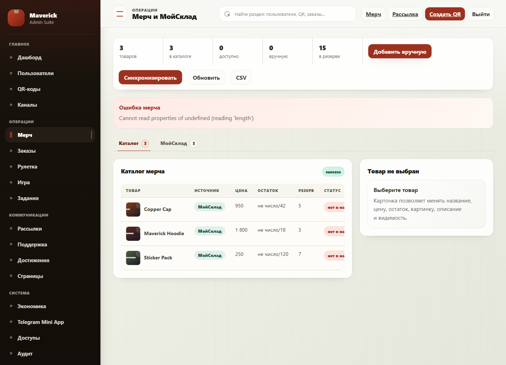
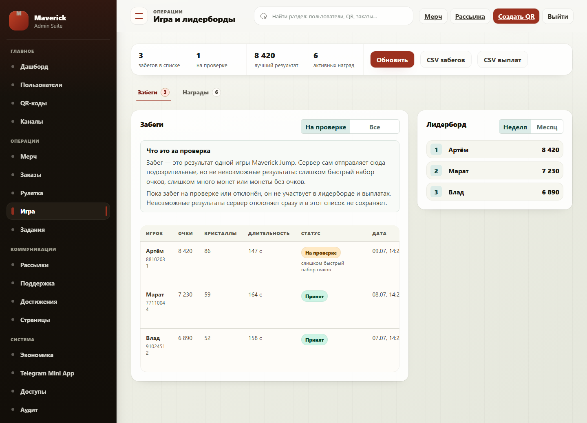
Один баланс.
Никаких дублей.
Mini App, бот и админка входят в одну согласованную систему. Критические операции проходят через единый backend и журналируются до внешних интеграций.
Vue 3 · TypeScript · Pinia · Phaser
aiogram · статусы · рассылки
PostgreSQL · Redis · Celery
Роли · аудит · PII permissions
Docker · Nginx · private storage
Повторный код отклоняется на уровне данных.
Начисления баллов и ключей идемпотентны.
Внешние события защищены от потерь и повторов.
Роли, права, аудит и защита персональных данных.
M
Соберём механику,
Обсудить проект
Нужен продукт, который связывает физическую покупку и Telegram?